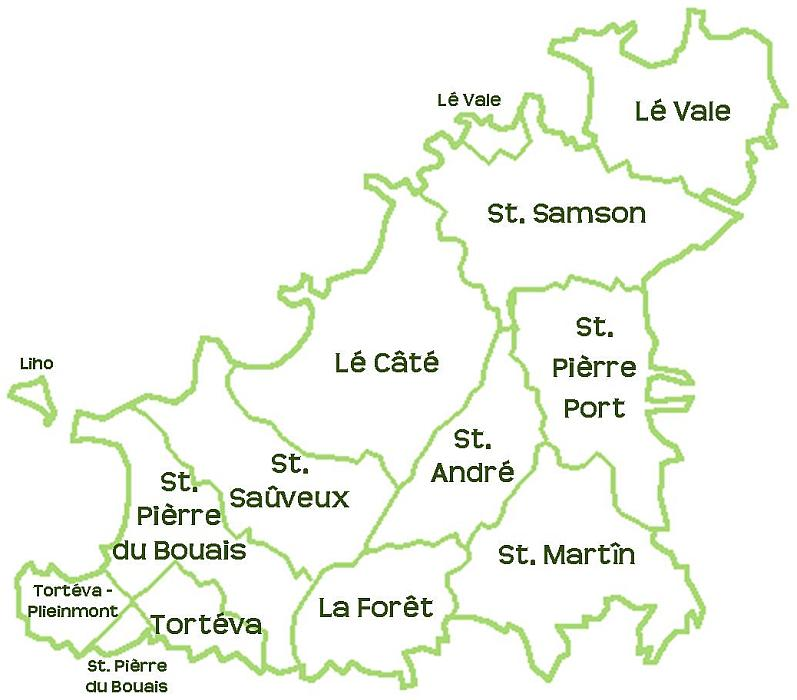

Eunne djingue de Jerriais

J'y r'ithons! Moussieu l'Bro n'a qu'a faithe sinne, et j'nos r'trouv'thons tous sus la cauchie, la même djingue, pour allé vaie l'bestias des Djérnesiais.
Nous en r'pâslla longtemps parmi nous! Eunne belle matinée, un grand steam, un jour de sport dans l'île-soeur. Un charmant améthitchin, un show d'vaques, des “drives” en vétuthe d'un bord et d'l'autre; lunch au Show, diné à l'hôtel, du champanne, des cigares de huit sous, des lyits à spring, et touos frais payis jusqu'au r'tou.
J'taimes eunne démié-douzaine et pus. Touôs d's hoummes de moyen et pus ou mains d'la r'ligion sinon... mais je n'm'en vais pas vos dithe ch'qu'ou n'avez pon besoin d'savé. J'avons tous juthé de n'nos taithe sus les frédénner de not' camarade. Et pis, ch'n'est pon viyant qu'nous est collecteu d'aumônes siez sé qui faut faithe longue fache quand nous est en Djernnési. Les Djérnesiaises n'sont pon tant à sifaiche!
Y'avait d's années qué j'n'avais té là... mais l'affaithe n'a pon changi pour dithe dépis l'temps. Lus routes sont èstréttes et crotchies, ch'est monte et d'valle tout l'temps, y'a des carrefours à touos les destours, des serres oquo pus qu'jommais, et i' nouôrissent lus béstchas sus d'la pâtuthe... à ch'qué j'en comprends. Et, en pâslant d'béstchas, jé n'vimes pas eunne seule âne... à bon d'nos gens n'en r'venaient pon.
Des gzéttes a la vregie, mais pas d'poummes-de-terre pour dithe: la raison en ést, a ch'que nou nos dit, ch'est l'manque de crapauds! les poummes-de-terre sont rouogneûses, nou n'peut s'en dèsfaithe. Ni d'poummiers, pour dithe! Lus terre est si infestée d'oignons de gzettes, que les poummes en ont print l'gout, et qund nous en buvait hardi les gens s'destouônaient quand nou passait - nous empestait a gzettes.
Y'en avait yun d'nous - un long, maigre, venvi - qui s'mint a dithe qu'il avait presqu'envie de s'en v'nin d'meuthé en Djernesi si poué trouvé tchiq chose dans les prix doux. Ch'qui cherchait, ch'tait un p'tit cottage pas trop loin d'eunne auberge, ov un gardin bin abrié, pendant au sud-seur-ouais, et un “lawn” endrét l'portico sus tchi sa préchenne femme pouôrait joué à croquet. Toutes les feis qu'nous apperchevait un cottage, nou lis d'mandait si ch'tis-là pouorrair faithe? Des temps il 'tait trop dans un fond, dans d'autres trop exposé, ou y'avait trop d'lièru amont l'pignon, ou la hêche 'tait trop près d'la rue, ou y'avait des mansardes, ou les f'naitres n'taient pon a grandes ozennes, etc., etc. Nou n'rencontri rin qui pouait lis convnin; i' s'en r'vint tout peineux avec nous, et j'cré bin qui' finitha ses jours là ou-ès qui d'meuthe a ch't'heu.
Après qu'j'eûmes dîné jusqu'à neuf heuthes, nou s'en fut vaie la ville. Nou n'pit rin! Quazi tout l'monde était en s'couochant - nou les viyait à travers lus ridgeaux - et lus seul et unique policeman 'tait a s'èsballyi en r'gardant eunne pompe qui n'avait pon d'brimballe. J'fûmes tout d'même “half-play” ès pictures. Nou n'avait que d'oxi, et ch'tait d'tchi triste!
Enfin, nou se r'trouvi tous a bord du steam le lend'main, sinon un couplye qui restétent en bardgin pour un ch'va, et un autre qui n'dounni pon d'extchûse. J'téléphonîmes a sa femme en arrivant, de n'pon s'touonné les sangs, et qui r'sourdrait sans faute le lend'main - ou rèsponni qu'ou n'sé touonnait pon les sangs pour si p'tit d'chose, et qu'le testament 'tait fait en sa faveur. Y'en eut deux qui rapportîtes des crabes pour lus femmes. J'en ris oquo en y pensant: les crabes lus couôtites pus chi qu'ichin, et y'en avait yeunne qu'était touothâtre.
Samuel
Chronique de Jersey 2/6/1915
Viyiz étout: